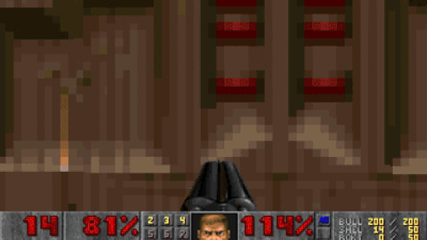
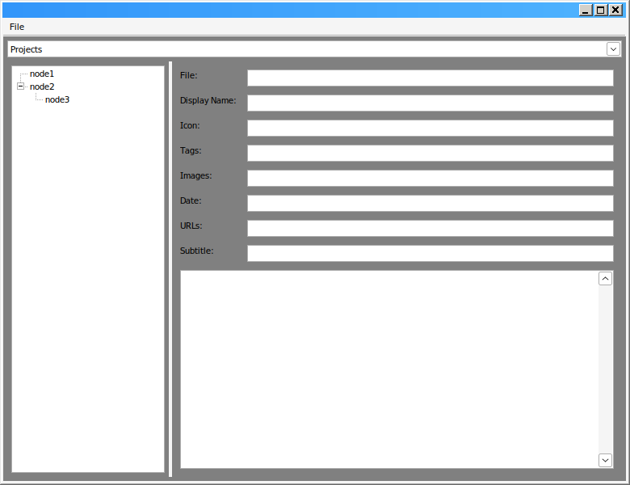

It's hard to believe that it's been almost 3 years since I decided to buy this domain on a whim. To be honest, I still can't quite put a finger on why exactly I decided to do this, as I've never been one to keep a diary or write a blog. But now that I have finished my Master's Degree in Computer Science and need to start looking for work, I sure am glad that I made such a weird decision a few years ago.
Summer came along, and I decided that it was about time I make this website presentable. The initial idea for it was really to just have a place for myself, in some ways as a rebellion of the fact that personal webpages have gone the way of the Dodo due to the enshittification of the internet. But life choices change in that timespan, and it became important to also have a place where I can put forward what I've been doing my entire life. I'm not sure if job recruiters will bother looking at this website, but it's convenient for me to list out stuff I've worked on so that I can best pick and choose for my applications. Even if I don't make this website for anyone in specific, at least I'd do it for me.
It's... a weird feeling to see a single page summarising your life's work. Even more so when said work might potentially be presented to someone who will decide your future. Never really thought that dicking about in Game Maker 5 at the age 10 to make a Space Invaders clone could be critical to me getting a job at the age of 25, but here I am...
To say I don't understand web development would be an understatement. Despite is being one of the largest employers of developers in the world, I never really cared for or wanted to care about the web. The web is a bloated mess of standards, and the software that lets one use it requires at least half of your system's resources. And the keywords? I don't even know where to get started. Who is MX, and what is his record? What course do I need to take in order to get my SSL certificate?
The main reason that I've always winced at the idea of doing web development? I've been making games since I was a kid, and to this day my biggest annoyance is working on UI. Because no matter how well it's been made, there's always going to be some weirdo with a funky screen resolution or setup who will find a way to wreck your work. Web development is basically that, but exponential as you need to take into account both desktops, phones, and esoteric devices with resolutions of any size or scale. And that's not to mention differing web standards and browsers who won't always agree on what's supported and how.
Now, I'm not a complete dunce with this stuff... Despite how much I joke about (and in!) the internet, I do have some ideas of what I'm doing. I'm familiar with JavaScript and WebGL, and HTML is basically just a fancy XML dialect. Making a website is infinitely easier than having to deal with everything that actually makes the internet work, and I can be thankful for my sanity that I'm not someone who needs to deal with that. Especially with the proliferation of tools like Wordpress and Jekyll, a layman can cook up a website in mere minutes without ever touching a line of code.
But that's not really me.
I'm someone who likes to understand things. I like breaking stuff open and looking at what makes them tick. Despite having done Computer Science, my two favorite subjects were from other degrees in my university: Logical Systems II and Microelectronic I. In the former, we implemented an 8086 processor using nothing but raw logic gates in in Xilinx, and in the latter we etched our own MOSFETs on silicon wafers. Hell, the reason I took up Nintendo 64 development was because I wanted to have an excuse to write game engines from scratch. I liken it to how a blacksmith will make their own tools from scratch. Picking up someone else's tool to make a website for me feels like I'm betraying who I am as a person. It would be the sane thing to do, but therapy is expensive.
Now, punching in some HTML and CSS for a blog page is easy. You do it once, and then copy paste that file around to make more pages, modifying the contents to fit the new blog entry. That's literally what I did for the first 3 blog pages on this website. But if you want a bit more out of a webpage than that, it quickly scales up. For instance, this blog entry has tags. You can click on a tag and it will take you to another web page that lists all the other pages in my website that have that tag as well. Could this be done manually? Sure. You can make the tag page yourself, add your blog post to said page, and then hotlink your blog post to it. But if at any time you need to change a page, or delete it, you need to remember to remove all references to and from it, lest your website be crippled with missing pages. So, to avoid this problem, developers use something that is called a "Static Site Generator", or SSG for short (not to be confused with Super Shotgun).
 To defeat the pinky demon, shoot at it until it dies. Image sourced from here.
Naturally, I wrote my own SSG to generate my own website. Funnily, most of the popular open source SSG's are written in JavaScript of all things, and I completely understand why. JavaScript is a super easy language to pick up, has hundreds of thousands of libraries, and works on any operating system that has a web browser (which, unless you use TempleOS as your daily driver, you have one). It is, an objectively, excellent choice to write a website generator in.
So I chose to write my SSG in C++.
Why? No particular reason. I like working with C/C++, and I like the look of native software that wxWidgets generates. Sure, it's harder and a bit less convenient than using JS or Python for my tool, but convenience was never really the point of the exercise. But for you, sane reader, if you ever decide to make your own site generator (which you shouldn't) use a strongly typed language. It will save you work and headache in the future.
There's two things I wanted out of my website: I wanted a place to list all my projects, and I wanted a place to write blog posts on. And each of these pages would have sections, for instance, listing different game projects by the engine they used. So the layout I had in mind for the program was to have a tree structure on the left side, where you would have a list of sections with pages inside them, and on the right side of the program you would have a bunch of entry boxes. Up top you would have a dropdown to pick between projects listing and blog listing. I whipped this up in a tool called wxFormBuilder, and copy pasted the generated code into a text editor.

{kind=link}